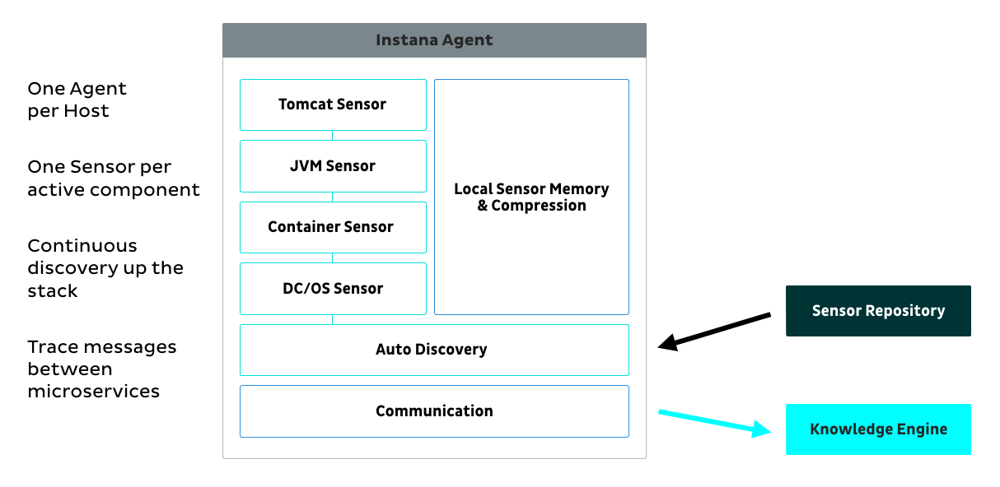
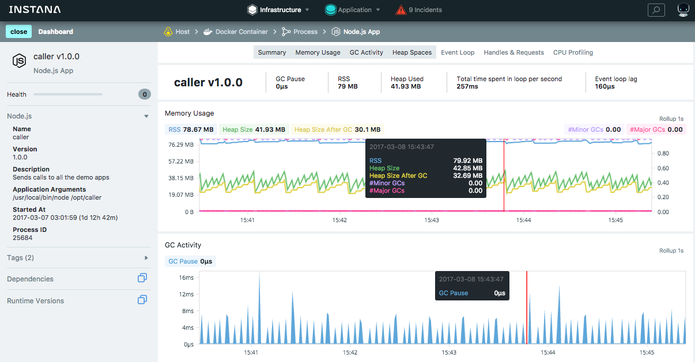
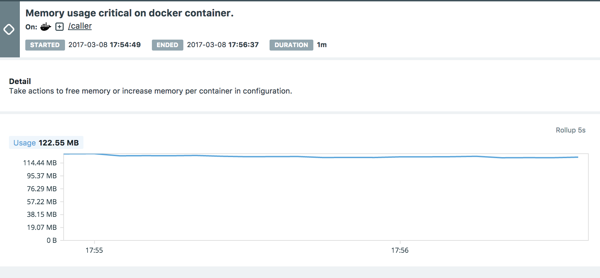

Deployment and monitoring of modern applications and infrastructure has evolved. Gone are the days of writing code for a year, deploying to production (having a release party), and hoping that the operations team has the tools to handle what comes at them. DevOps culture and CI/CD practices no longer prioritize deployment timelines over solving customer problems.
Modern operations require continual improvement so businesses can keep up with the evolving expectations of their customers. Adopting container technologies accelerates this improvement by enabling businesses to implement continuous delivery, and microservices architectures.
What’s next? After a business has adopted containers, monitoring them is the next step. But, established monitoring tools were designed for static, legacy application stacks, before the concepts of CI/CD, microservices and containers even existed. These traditional tools struggle to give teams the visibility and feedback they need to assure quality of service for critical modern applications.
To address the gap between legacy monitoring tools and modern applications, Instana is helping IT teams make sense out of the chaos that deploying containers at scale creates, by giving them full-stack visibility, including summary metrics about the quality of the application’s services. Instana has added a package in the DC/OS Universe service catalog, which is now available to install on DC/OS.
We’re excited to announce the Instana package for DC/OS, which reports on the overall health of a user’s container environment, including the quality of their microservices and code. DC/OS users who install Instana will better understand how the containers in their cluster impact each other as they interact through the layers of their infrastructure, and how well the microservices that make up their application are operating.
Visibility for DC/OS
 Structure of an Instana Agent
Instana installs one agent on each host in the DC/OS cluster, which discovers the containers running on those hosts. Each agent then fetches the necessary sensors from the Instana Sensor Repository, and begins monitoring both the microservices inside each container, and the messages passed between microservices. It reports its information to the Instana Knowledge Engine, which analyzes and visualizes the data.
 Example visualization of node.js metrics running inside a Docker container on DC/OS
Each sensor from the Repository allows Instana to monitor a different type of containerized application component, so Instana can provide quality of service (QoS) metrics on a container to container basis, depending on the language that the component was written in. There are over 60 sensors so far.
 Single container memory utilization on DC\/OS
The new DC/OS monitoring solution from Instana provides:
- Insights into a DC/OS cluster
- Monitoring and quality-of-service management of services running “inside” and “outside” of containers, including full distributed tracing
- Visualization and searching for Marathon-specific container labels and tags
- Marathon event detection and correlation to any QoS problems
- Immediate insight into root-cause issues impacting your DC/OS cluster and the applications that run on it
Get started by signing up for Instana, spinning up a DC/OS cluster, and installing the Instana Package from the Universe. With Instana and DC/OS you get the actionable intelligence needed to support your modern operations environment.
Interested in learning more?
Register for our webinar on March 30th, 2017 at 10:00 am PST, and learn how the Instana and DC/OS make monitoring your containerized application and managing the quality of your services incredibly easy.